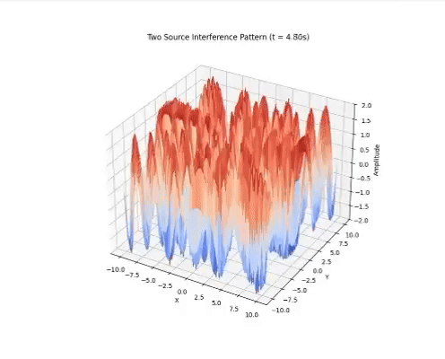

Waves - Problem 1
🌊 Interference Patterns on a Water Surface
Wave behavior is one of the fundamental aspects of physics, and interference patterns beautifully demonstrate how waves interact with each other. Let's explore how interference occurs using one, two, and multiple wave sources.
1. Wave Propagation from a Single Source
When a wave is emitted from a single point source in a uniform medium, it propagates outward in concentric circles.
- \(A\): Amplitude
- \(k\): Wavenumber (\(k = \frac{2\pi}{\lambda}\))
- \(\omega\): Angular frequency (\(\omega = 2\pi f\))
This forms the simplest wavefront without interference.

2. What is Interference?
Interference occurs when two or more waves overlap in the same medium. There are two types of interference:
- Constructive interference: Waves amplify each other.
- Destructive interference: Waves cancel each other out.
This can be understood with the principle of superposition:
3. Two Source Interference Pattern
When two wave sources are active, their wavefronts interfere with each other. Depending on the phase difference and distance, they either reinforce or cancel one another.
- If \(\Delta L = n \lambda\) → Constructive
- If \(\Delta L = \left(n + \frac{1}{2}\right)\lambda\) → Destructive
This creates a classic ripple pattern with bright and dark fringes (or high and low amplitude regions).

4. Interference from Multiple Sources (Triangle, Square, Pentagon)
More complex patterns emerge when we use three or more wave sources arranged in specific geometries (e.g., triangle, square, pentagon).
Each point on the screen receives waves from all sources:
These configurations generate symmetrical and intricate interference patterns that depend heavily on the number and position of the sources.

🔺 Wave Interference with Three Sources (Equilateral Triangle)
We analyze the interference pattern produced by three point sources placed at the vertices of an equilateral triangle.
Geometry of the Setup
Assume the triangle is centered at the origin, and each vertex lies on a circle of radius \(R\). The coordinates of the three sources are:
Source 1: \((R, 0)\)
Source 2: \(\left(-\frac{R}{2}, \frac{R\sqrt{3}}{2}\right)\)
Source 3: \(\left(-\frac{R}{2}, -\frac{R\sqrt{3}}{2}\right)\)
Each source emits a circular wave described by:
Where:
\(r_i = \sqrt{(x - x_i)^2 + (y - y_i)^2}\) is the distance from the \(i\)-th source to the point \((x, y)\)
\(k = \frac{2\pi}{\lambda}\) is the wave number
\(\omega = 2\pi f\) is the angular frequency
Total Wave Equation
Using the superposition principle, the total displacement is:
This combined wave creates an interference pattern, with regions of:
- Constructive interference where the wave peaks align
- Destructive interference where the peaks and troughs cancel each other out
These patterns vary based on the distance between sources, wavelength, and observation point.
-
5. Comparison Table: Constructive vs Destructive Interference
| Feature | Constructive Interference | Destructive Interference |
|---|---|---|
| Path Difference (\(\Delta L\)) | \(n \lambda\) | \(\left(n + \frac{1}{2}\right)\lambda\) |
| Resulting Amplitude | Increases (Additive) | Decreases (Cancelation) |
| Phase Relationship | In Phase | Out of Phase |
| Visual Effect (Heatmap) | Bright Spots | Dark Spots |

6. Conclusion & Observations
Through this study of water wave interference, we can conclude:
- Interference arises from the superposition of multiple wavefronts.
- Constructive and destructive effects are determined by wave phase and path differences.
- More sources create more complex, symmetrical, and visually captivating interference patterns.